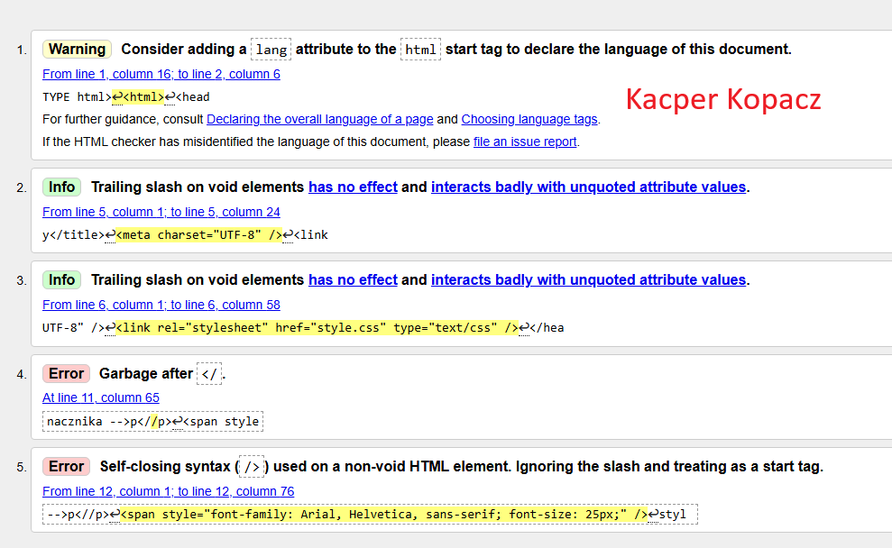
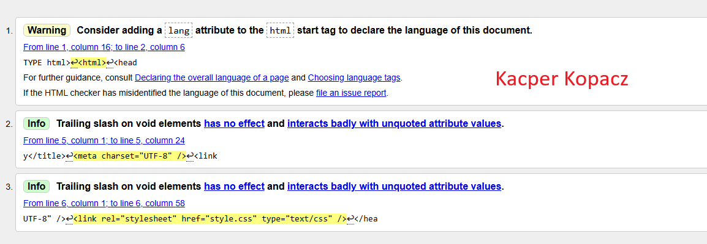

Co to jest walidacja
Walidacja to ogół czynności mających na celu sprawdzenie, potwierdzenie lub uprawomocnienie trafności, dokładności lub odpowiedniości czegoś. W zależności od kontekstu oznacza to weryfikację danych, techniczne potwierdzenie działania systemu, uznanie czyichś uczuć w psychologii lub nadanie uprawnień.
Rodzaje walidacji
1. Walidacja efektów uczenia się (metody walidacji)
Stosowana w edukacji i szkoleniach do potwierdzania wiedzy i kompetencji:
[Test teoretyczny] – pisemny sprawdzian wiedzy.
[Wywiad swobodny/ustrukturyzowany] – rozmowa z ekspertem (tzw. [rozmowa kwalifikacyjna]).
[Obserwacja w warunkach rzeczywistych] – sprawdzenie umiejętności w pracy.
[Obserwacja w warunkach symulowanych] – np. użycie trenażera lub symulatora.
[Analiza dowodów i deklaracji] – przegląd portfolio, dyplomów lub wcześniejszych prac.
2. Walidacja danych (informatyka)
Proces sprawdzania poprawności danych wprowadzanych do systemu:
[Walidacja typu] – czy wpisano liczbę, a nie tekst.
[Walidacja zakresu] – czy liczba mieści się w zadanym przedziale.
[Walidacja formatu] – np. czy adres e-mail zawiera znak '@'.
[Walidacja obecności] – czy pole nie jest puste.
3. Walidacja systemów/procesów (przemysł/technologia)
[Walidacja prospektywna] – przeprowadzana przed wdrożeniem nowego procesu.
[Walidacja retrospektywna] – oparta na analizie historycznych danych.
[Walidacja współbieżna] – prowadzona w trakcie normalnej produkcji.
Co potrafi wskazać walidator
Walidator, w zależności od kontekstu (techniczny lub biznesowy), najczęściej wskazuje:Błędy składniowe lub techniczne – identyfikuje niezgodności ze standardami (np. błędny kod HTML, niepoprawny format danych, błędy w API).Błędy merytoryczne/logiczne – weryfikuje poprawność danych w kontekście ustalonych reguł biznesowych (np. czy data urodzenia jest poprawna, czy wymagane pola są wypełnione)

